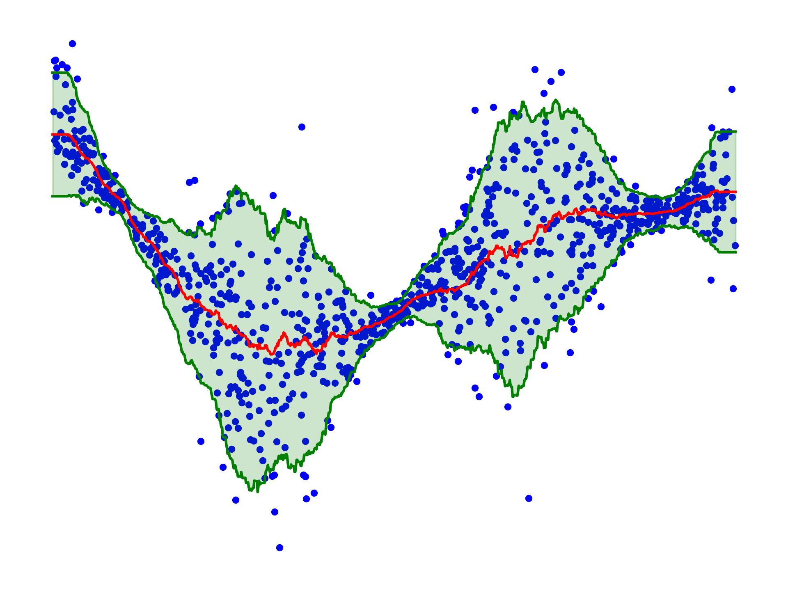

Unfortunately, I am totally ignorant about conformal inference. However, in today’s seminar, I attended a very interesting talk on the topic, and I think it’s time I try implementing the most basic version of it. It seems like a useful concept, and I might even explain it next semester in my simulation class. What I’ll describe below is the simplest version of conformal inference. There appear to be many extensions and variations of it, most of which I don’t yet understand. For now, I just want to spend a few minutes implementing it myself to ensure I grasp the basic idea.
Consider the (simulated) 1D dataset \(\mathcal{D} = \{x_i, y_i\}_{i=1}^N\) below; our goal is to build prediction confidence intervals \([L(x), U(x)]\) for the target variable \(y\) given a new input \(x\). Crucially, we would like these predictions to be well-calibrated in the sense that \(y \in [L(x), U(x)]\) with probability \(90\%\), say.
I am lazy so I will be using a simple KNN regressor to predict the target variable \(y\) given a new input \(x\). For this purpose, split the dataset \(\mathcal{D}\) into two parts \(\mathcal{D}_{\text{train}}\) and \(\mathcal{D}_{\text{Cal}}\). The regressor is fitted on \(\mathcal{D}_{\text{train}}\). To calibrate the prediction intervals, compute the residuals \(r_i = |y_i - \hat{y}_i|\) on the calibration set \(\mathcal{D}_{\text{Cal}}\), where \(\hat{y}_i = \hat{y}(x_i)\) is the prediction of the regressor on \(x_i\). One can then compute the \(90\%\) quantile \(\gamma_{90\%}\) of the residuals: with probability \(90\%\) we have that \(y_i \in [\hat{y}_i - \gamma_{90\%}, \hat{y}_i + \gamma_{90\%}]\) on the calibration set, and this can be used to build the prediction intervals, as displayed below:
Not terribly impressive, but at least it is entirely straightforward to implement and it has the correct (marginal) coverage: for a new pair \((X,Y)\) coming from the same distribution as the training data, the probability that \(Y\) falls within the prediction interval is indeed \(90\%\), up to a bit of nitpicking. Note that it is much much less impressive than saying that
\[\mathbb{P} {\left( Y \in [\hat{y}(x) - \gamma_{90\%}, \hat{y}(x) + \gamma_{90\%}] \; | \; X=x \right)} = 90\%,\]
which is clearly not true as can be seen from the figure above, but it is a good start. As a matter of fact, I’ve learned today from the very nice talk that without other assumptions, it is impossible to design a procedure that would guarantee the above so-called conditional coverage (Lei and Wasserman 2014). But let’s face it, the figure above is terribly unimpressive. Nevertheless, one can indeed make it slightly less useless by calibrating using a different strategy. For example, I can use the training set to estimate the Mean Absolute Deviation (MAD) of the residuals \(\sigma(x) = \mathbb{E}[ |Y - \hat{y}(x) | \; | \; X=x]\) (again with a naive KNN regressor) and use the calibration set to estimate the \(90\%\) quantile \(\gamma_{90\%}\) of the quantities \(|y_i - \hat{y}_i| / \sigma(x_i)\). This allows one to produce calibrated prediction intervals of the type \([\hat{y}_i - \gamma_{90\%} \sigma(x_i), \hat{y}_i + \gamma_{90\%} \sigma(x_i)]\), which are displayed below:

It is slightly more useful, and it is again surprisingly straightforward to implement, literally 5 lines of code. I think I will have to read more about this in the future and I am pretty sure I will introduce the idea to the next batch of students!
Readings:
- The introduction paper (Lei et al. 2018) is really good
- I am really curious about (Gibbs, Cherian, and Candès 2023) and it’s next on my reading list